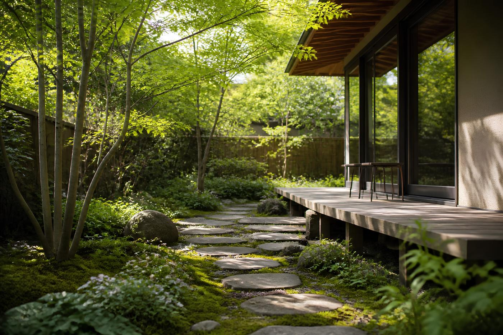
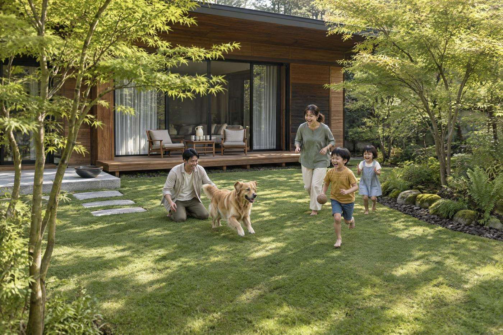

MORNING
朝の光で、ゆっくり始まる。
カーテンの向こうの緑を見ながら、最初の一杯を淹れる。庭があることで、朝の空気にひと呼吸の余白が生まれます。
LIFE style
庭は、眺めるためだけにあるのではありません。毎日にそっと混ざり合い、家の時間を少し豊かにしてくれる場所です。
A DAY IN THE GARDEN
特別なことをしなくても、外の光や季節の移ろいが、暮らしの時間を静かに変えてくれます。
MORNING
カーテンの向こうの緑を見ながら、最初の一杯を淹れる。庭があることで、朝の空気にひと呼吸の余白が生まれます。

AFTERNOON
枝が伸びたこと、花が開いたこと、風の向きが変わったこと。小さな気づきが、家にいる時間を心地よくします。

EVENING
夜の庭は、もうひとつの居間。必要なところだけを照らして、家の中から眺める時間まで美しく整えます。

HOLIDAY
芝生の上を、子どもと犬が駆けまわる。庭は、家族が自然と集まる、いちばんにぎやかな居場所になります。
庭は、暮らしの余白。
外の時間を、あなたらしい日常のそばに。
暮らしのことを相談する